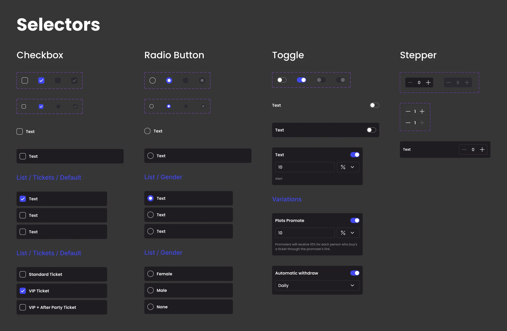
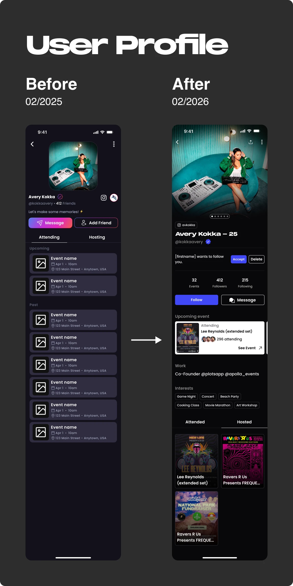
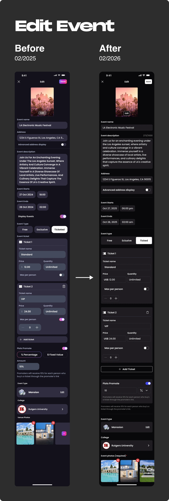
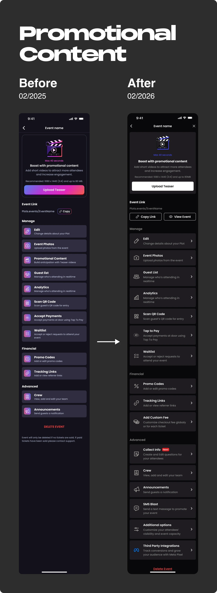
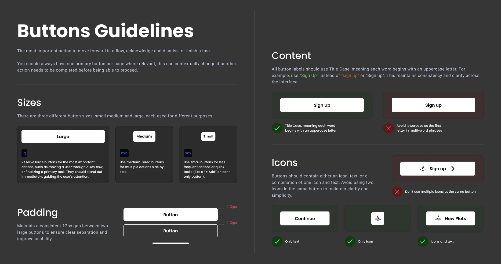
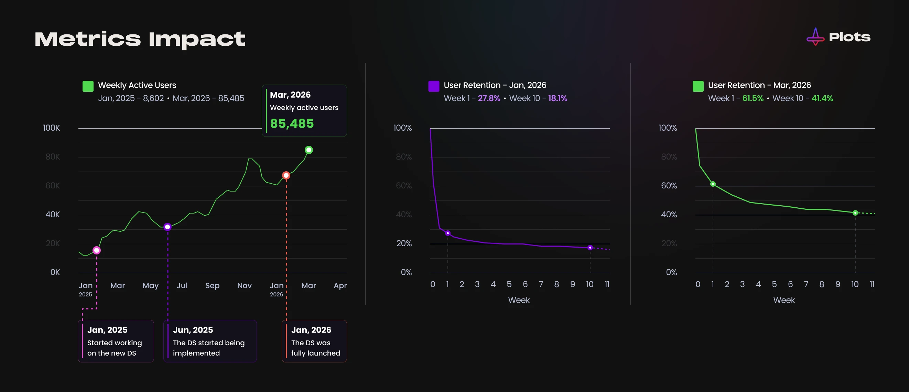

Overview
Plots didn't have a documented design system, so I joined the team to build one from the scratch.
Over 10 months, I audited the existing product, built a library of 60+ reusable components in Figma, and defined visual guidelines the team could use going forward.
Here is the old structure of the Plots app before I started — without a consistent identity and without master components. This was all the material I had when I started.
Problem
Plots' app had been acquired from another company and evolved from there, with the design growing alongside the product without a structured system.
Components were built individually rather than as linked master components — so as the design evolved, older parts of the app kept using outdated elements instead of updating alongside newer screens. Over time, this created a patchwork: buttons, cards, and inputs each existed in multiple slightly different versions depending on when that part of the app was last touched.
This hit the development team especially hard. Without master components to reference, engineers often didn't know which version to use, and ended up rebuilding elements from scratch for nearly every new screen — adding unnecessary dev time and making the app even harder to keep visually consistent.
Process
1. Audited existing screens to catalog inconsistencies — how many variants of each component existed, and where patterns diverged.
2. Built a reusable component library with variations — 60+ components including buttons, inputs, cards, lists, tags, placeholders, and bottom sheets.
3. Defined visual guidelines to use the components — when and how to apply each variation — to keep the system consistent as it scales.
4. Worked in parallel with another designer who was redesigning flows and features — my components fed directly into that work.
Component system
Instead of one-off styling decisions, I built components with defined states and variations — default, hover, disabled — so any designer on the team could use them consistently without reinventing patterns.

Final design system
Below is the result of the Plots design system (02/2025).
Screens: before / after
Below are before-and-after comparisons of key flows and screens. As I built the design system, I replaced inconsistent, unlinked components with linked master components — giving each flow a unified visual language.
Because components were linked, updates (like rebranding) could propagate everywhere at once, letting the team apply changes quickly and work in parallel as the product evolved.



Guidelines
For more complex components like buttons, we created a guideline document with rules, explanations, and best-practice advice for using them. This helps the team keep screens and flows consistent as the app grows.

Outcome
Plots now has a documented, reusable component system that didn't exist before — a shared foundation the team could build from instead of designing screens from scratch each time.
This made it faster to create new screens and flows, and gave the team a consistent base to expand Plots into a web version using the same components.
The stronger visual consistency also helped reinforce the Plots brand identity, giving users a more intuitive, trustworthy experience. In the months following the design system's rollout, weekly active users grew from under 10K to over 85K. First-month retention increased from around 27% to over 60%, and 10-week retention grew from around 18% to over 40%. Other product changes launched in this period too, but the team saw a clear connection between the more consistent design and this growth.
